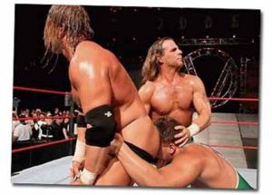

Pressingcatchista
 De: La Frikipedia, la enciclopedia extremadamente seria.
De: La Frikipedia, la enciclopedia extremadamente seria.
| De la serie tribus urbanas del mundo:
|
| Pressingcatchista
|
Ejemplo de la tribu
|
| Idiota de la WWE
|
|
| Hábitat
|
rings, gimnasios...
|
| Inteligencia
|
Alta... En pressing catch
|
| Frase favorita
|
CALLA O TE APALIZO!!!
|
| ¿Peligroso?
|
Si les molestas, prepárate a morir.
|
| Obsesión
|
Lucha libre
|
| Notas
|
61,9
|
 Los pressingcatchistas son muy respetuosos.
Especie que cada vez está proliferando más en este planeta (sobretodo en Aspanya) gracias a su programa origen. Un Luchador se caracteriza por tener los músculos bien marcados, pesan 120 kg pese a no tener obesidad (excepto algunos), pegar unas hostias capaces de perforar una pared de 20 cm de grosor y saber hacer to tipo de cosas que llaman llaves (que son muy útiles para acabar con todos los reggaetoneros del mundo, ecepto por los que no lo son.).
Hábitat
Suelen encontrarse en todos sitios, pero normalmente suelen estar en actuaciones a las que llaman shows (SmackDown, TNA, ECW... para poner ejemplos), en gimnasios (para aumentar la gordura de los blindajes que pueden perforar) y en foros o chats donde hablan con los de su especie comentando algun combate del último show que vieron, que cosas hacer para aumentar su capacidad de perforación, su fuerza, etc.
Que hacer si te has metido con uno de ellos por error
Mejor que huyas, porque si te alcanzan te pueden romper TODA la osamenta con un dedo, así que no te metas con uno de estos a no ser que tengas un bazooka en tus manos.
Cómo ser uno de ellos
Algunos se fusionaron con tribus como
Gótico u otras.
Ser pressing catchista NO es nada fácil, pero la mayoria lo puede conseguir.
- Tira a la basura TODAS las revistas pijas que tengas (¿Qué haces leyendo la Superpop? Tirala, ¡tirala!, ¡¡¡QUE LA TIRES TE DIGO!!! Ahora, muy bien). A partir de hoy solo leerás la WWE Magazine (ahora que ya existe en España, asi nos ahorramos tener que aprender ingles y darles mas poder a los yankis).
- Ahora, deja ya de ver cosas como RBD, El Internado, Barney o Disney Channel, etc. Puedes ver Pressing Catch y SÓLO Pressing Catch., tanto por internet como por canales que lo ppngan Se admite el Pressing Catch mexicano o japonés, cualquiera vale con tal de que sea Pressing Catch. Como mucho, te dejo ver combates de boxeo.
- Nos acercamos a lo más dificil. Ahora, si alguien se mete contigo NO LE DIGAS cosas como "se lo dire a mi papi", "vas a ir al profe'", sino que has de meterle la paliza de su vida, a ver si aprende a respetar de una vez. Y NI SE TE OCURRA PERDER CONTRA ÉL.
- Si tienes alguna consola (PS2, PSP mejor) cómprate o descárgate algun juego de la WWE (WWE Smackdown vs RAW 2008 por ejemplo), de TNA si es necesario.
- Lo más difícil: Ve al gimnasio siempre que puedas. Si no puedes por que aún no tienes 16 años, puedes entrenar en casa con material cotidiano (palos, garrafas de agua, tu ordenador antiguo, etc). Y si te da pereza, existe la opción de engordar hasta ser como Rikishi o Viscera.
- Evita a toda costa escuchar el Mierdeton, pues te puede dejar sin fuerzas, o en su defecto te volverá Luchador Vendido. Escucharás sólo temas de entrada de luchadores o usarás como uno algún tipo de música.
- Aprende a realizar movimientos como el Tombstone, el FU, el Pedigree y otros, todos los que puedas, aunque sean de luchadores desconocidos. Si es necesario, invéntate tu propio finisher.
- Ignora los mensajes que pasan en cada evento de "no intente esto en casa o en la escuela". Realízale la Jericho Walls a quien peor te cae y mantenla hasta que suplieque piedad o hasta que escuches un revelador crujido en la base de su espalda.
- Si eres mujer, deja de comer esas asquerosas chocolatinas y empieza a ponerte silicona en las tetas, furcia.
- Compra en mercadillos o por internet máscaras auténticas de lucha libre de gente famosa (Great Sasuke...) y camisetas de luchadores (excepto John Cena) y úsalas cuando sea necesario.
Tipos
Pressingcatchistus fanáticus
Comprende desde niños hasta adultos que quedaron trastornados con la lucha libre profesional. La mayoría de ellos (más adultos) creen que la lucha libre es real, por lo que llevarles la contraria puede resultar en una gran discusión. Cuando ven combates de lucha libre -o mejor dicho WWE- entran en un estado mental de completa concentración. El fracaso de sus espectativas en un combate puede generar una depresión en el individuo o en una alteración violenta. Todos los "fanáticus" solo practican la lucha libre a nivel de aficionado, lo que según estadísticas de la Universidad de Iowa, acaba con la vida del 10,5% de los jóvenes.
La mayoría de los "fanáticus" visten principalmente con poleras de sus ídolos de WWE, donde el que posee la polera de algúna Superstar de la Attitude Era (Stone Cold, Mankind, Shawn Michaels) genera gran respeto. Los más pequeños también usan accesorios de Jeff Hardy.
Pressingcatchistus crucerus
Pequeñín, pero matón. Suelen ser bajitos y pesar unos 60 kg. Les gusta dar saltos y patada, así como trepar al lugar más alto que vean, como un tejado, un balcón o algo así, para hacer una acrobacia con trompo encima de su oponente.
Pressingcatchistus obesus
Suelen pesar de 170 kg p' arriba y medir como mínimo 180 cm. Son lentos, pero ni un camión en embestida puede derribarlos, y sus tácticas suelen consistir en entrillar al rival contra un rincón, pisotearlo o tirarse encima de él de culo o de panza.
Pressingcatchistus extremus
Son unos los más peligrosos, ya que saben usar todo tipo de cosas como armas (sillas, palancas, farolas...) aumentando el dolor de sus golpes. La mayoría son de la ECW de donde surgio el mexicanisimo gremio hardcore.
Pressingcatchistus cuadradus
Suelen ser individuos rellenos de esteroides, y sus golpes duelen.
Pressingcatchistus cuadrobesus extremus
Son la combinación de un obesus, un cuadradus y un extremus. Estos son los más peligrosos, ya que te pueden aplastar con su grasa, pegarte unos puñetazos dolorosos y, además, romper cualquier cosa en tu cabeza (con esos músculos, duelen más que los extremus). Yo de ti no me metería con ellos.
Aliados y enemigos
Estos son los pressingcatchistas nipones.
Aliados
- Los Jebis: Tienen enemigos comunes, asi que a veces se alían para acabar con ellos.
- Los Frikis: Un luchador WWE es, aunque sea en una parte pequeña, un friki. Algunos pequeños grupos de frikis se aglutinan en torno a pressingcachistas para protegerse sirviendo como sus lacayos, al igual que el feudalismo en la Edad Media.
- Los Góticos: Tienen enemigos comunes, y si se fusionan crean Pressing gótico, que tiene el físico del pressing catchista y los poderes del gótico fusionados.
- Los Rockeros: Son colegas de farra y les prestan musica para hacer sus presentaciones.
- Los Raperos: Misma razón que los anteriores.
Enemigos
- Los Pijos: No paran de meterse con todo el mundo, decir que son "rebeldeguays", maquillarse hasta los cojones y creerse los mas chulos cuando se quejan por solo tocarles un poquito "ay, osea no me toques" o por que les vas a dar su merecido "se lo diré a mi papi", "se lo diré al profe y te castigara".
- Los Cani: Es obvio.
- Las asociaciones de padres: Las asociaciones de padres mojigatos fueron las causantes de que quitaran Pressing Catch de la tele, por lo que son sus enemigos naturales declarados.
- Los Emos: Se cortan las venas cuando ven a un luchador, pero si los guia un pan aumentan su nivel de pelea en 1.
- Los regaytoneros. Por ser una gran amenaza para la música y la humanidad.
- La tercera edad: Los abuelos son un gran detractor para la lucha libre, ya que son muy incredulos y cuestionan todo mientras ven lucha libre, lo que genera un gran irritación en los pressingcatchistas. También en el caso de los pressingcatchistus fanáticus juniors, sus abuelos no les permiten ver la lucha libre o ocupan todo el día el televisor viendo películas repetidas o programas de cultura.
 Lucha Libre Lucha Libre 
|
 Luchadores Luchadores 
 Empresas Empresas
 Estilos de Lucha Estilos de Lucha
 Otros Otros
|
Autor(es):
- Fordus
- Alex2610
- Roms
- Azulejos
- Diegocon13
- Fallen Angel
- Dgo34
- Carlos Uríos
- Carlos Urios
- EseFaryWuapo
Frikipedia 2005-2016, Licencia
GFDL 1.2 - Extraído por FrikiLeaks